CASE 01
佐賀牛 生ハンバーグ
調理写真・個包装・発送箱などの素材から、商品内容とシズル感が一目で伝わるEC画像へ。
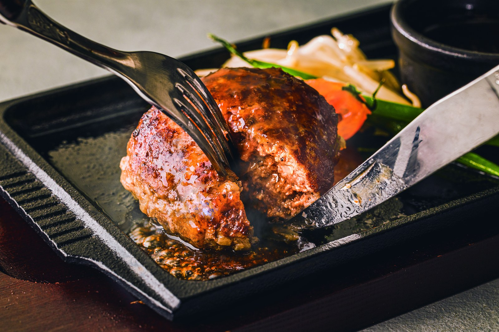
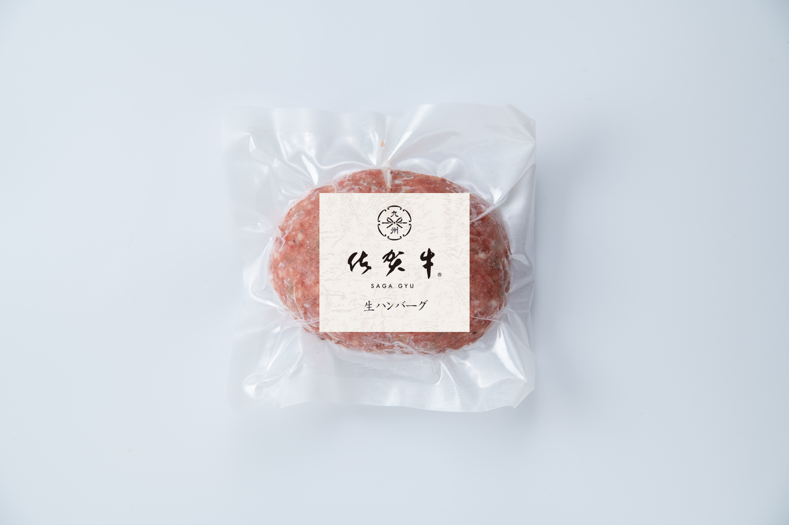
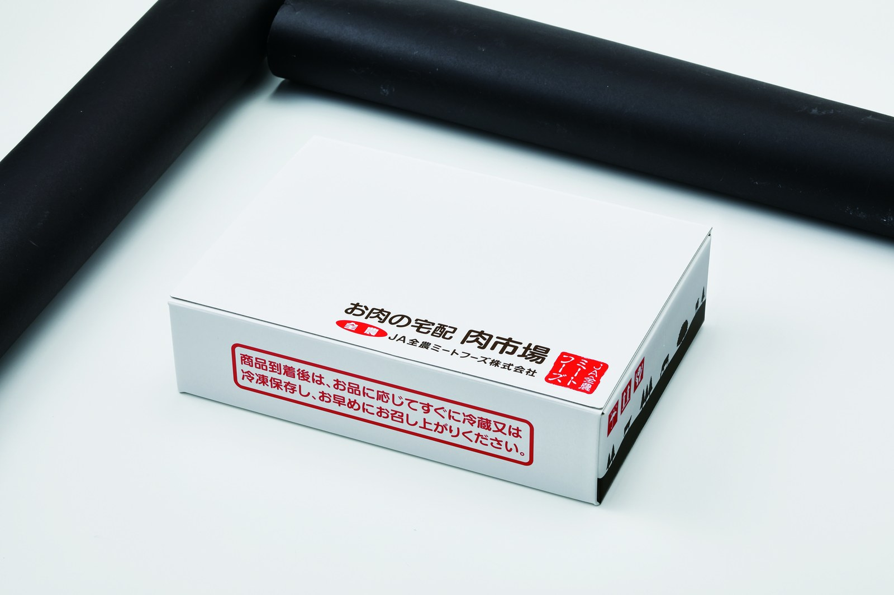
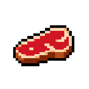
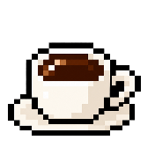
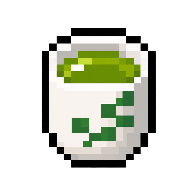
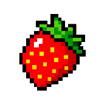
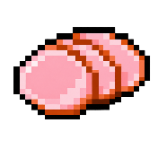
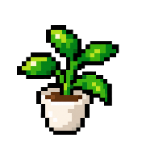
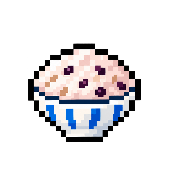
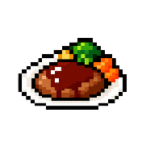
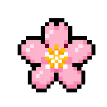
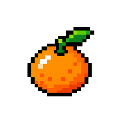
EC / WEB DESIGNER — SAGA, JAPAN
商品画像・LP・バナー・SNS。
「何を、どう見せれば伝わるか」から考えてデザインします。
支給された素材を、ECで伝わるクリエイティブへ。既存画像は、情報の優先順位・視認性・商品の見え方を整理し直します。
このポートフォリオでは、完成画像だけでなく「素材 → 完成」「Before → After」を中心に、制作のプロセスも見える形でまとめています。
PROJECT OVERVIEW
02 — MATERIAL TO DESIGN
支給素材を起点に、商品の魅力と必要な情報を整理して制作した事例。完成画像はサムネイルから切り替えられ、メイン画像をクリックすると全画面で自動再生します。
CASE 01
調理写真・個包装・発送箱などの素材から、商品内容とシズル感が一目で伝わるEC画像へ。



CASE 02
大会写真とロゴを組み合わせ、イベントの高揚感と出走権の内容がすぐ伝わるビジュアルへ。
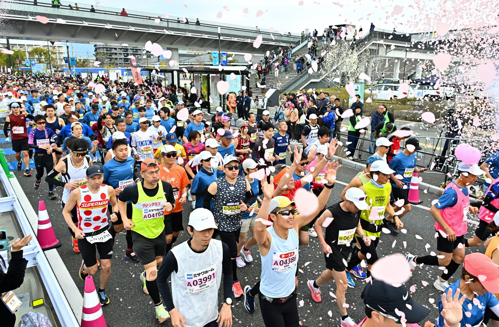
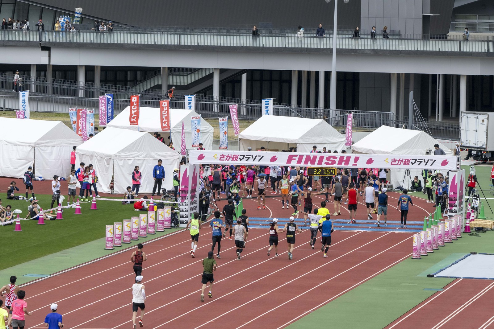
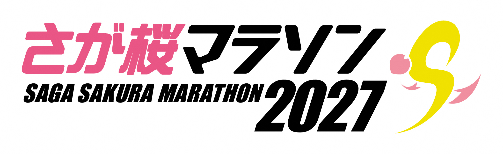
CASE 03
撮影条件の異なる素材を整え、シリーズ感・商品差・食卓での魅力が伝わる構成に。
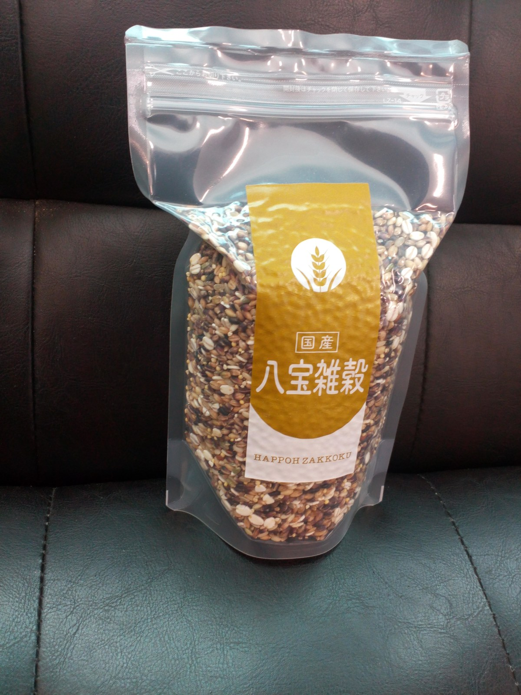
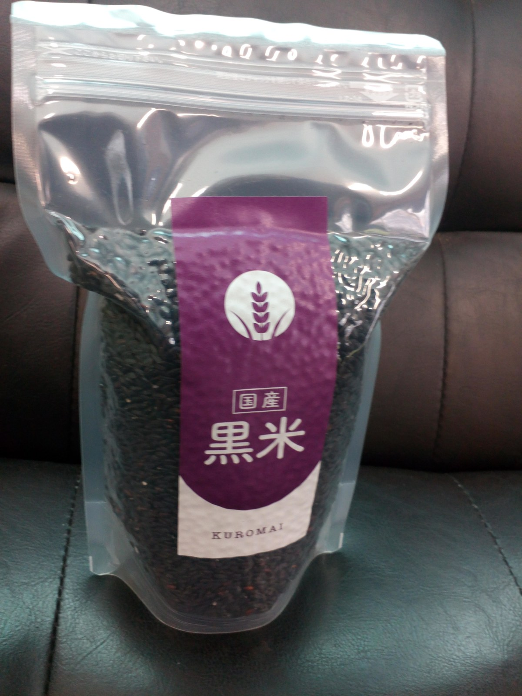
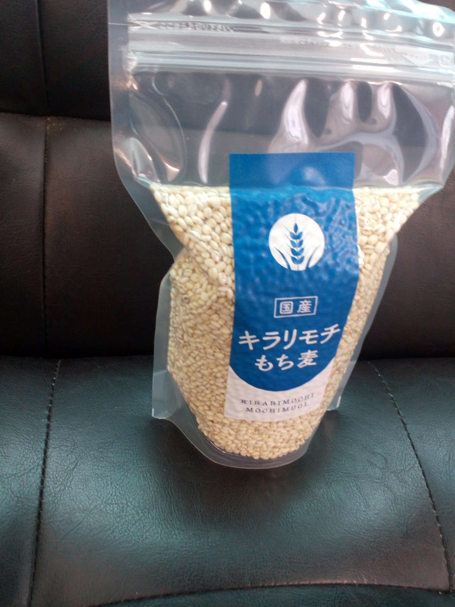
03 — BEFORE / AFTER
中央のハンドルを動かして、改善前と改善後を比較できます。画像は全体が見えるよう、1000×667の表示枠に収めています。
MORE IMAGES
サムネイルをクリックすると大きく表示しますMORE IMAGES
サムネイルをクリックすると大きく表示しますMORE IMAGES
サムネイルをクリックすると大きく表示しますMORE IMAGES
サムネイルをクリックすると大きく表示します04 — PAGE RENEWAL
既存の返礼品ページを土台に、画像枚数と情報量を増やし、商品の魅力・食べ方・背景まで伝わるページへ再構成した事例です。
RENEWAL 01
既存の7枚構成から、商品訴求・食べ方・ブランド・生産者・レビューなどを追加し、11枚へ拡充しました。
RENEWAL 02
既存3枚から、商品の魅力・食べ方・地域の取り組み・生産者紹介まで内容を広げ、8枚構成へ。
05 — SELECTED WORKS
ジャンル順に並べた制作実績が、1列で右から左へゆっくり流れます。矢印で手動でも送れます。
RESULTS / RANKING
制作した画像が人気ランキング上位に掲載され、販売目標個数の達成などにつながった実績があります。
06 — MY APPROACH
何の商品で、何が魅力なのか。スクロール中でも意味が拾える情報設計を意識します。
装飾のための装飾ではなく、写真・コピー・余白を使って商品の魅力が中心に残る画面へ。
PCで完成して終わりではなく、小さな画面での文字サイズ・視線の流れ・情報量まで確認します。
ECモール、LP、SNSなど、見る人と使われ方に合わせて見せ方と情報の強弱を調整します。
07 — PROFILE
EC / WEB DESIGNER
ECサイトを中心に、商品画像、LP、バナー、SNSクリエイティブなどを制作。見栄えだけでなく「何が伝わるべきか」を整理して、目的に合わせた画面を組み立てることを大切にしています。
Contact information is provided with application documents.